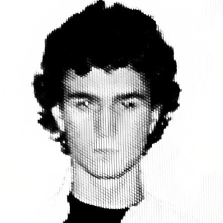

Risu Jannise is a visual artist working with major music artists, where he takes on the full production cycle: from directing and cinematography to editing and color grading — or works as a precise specialist wherever needed.
Starting from his first edit reels in 2017 and debut music video in 2021, today he is expanding his vision and scope — art direction and deep engagement in the creative environment in collaboration with other artists.
He works on a permanent basis with 9mice. Among other names he has worked with — Egor Kreed, Anikv, madk1d and Nettspend and others.
In parallel, Risu is developing his own project TRAYMA — a creative-ideological movement in its early stages.
Video
2026:
9mice – Do Vesni Directed
9mice, Егор Крид, тёмный принц, madk1d – Jealous Camera
2025:
9mice – ГОША РУБЧИНСКИЙ Directed
9mice – u+me Directed
Nettspend – Tommy Edit
Exvv, Fakov, FBS – Shhh Directed / Cover
madk1d – дырки в штанах Edit
9mice SEOUL Vlog
BRUNETTE – TRY Edit
myspacemark - mannequin Edit
gotlibgotlibgotlib — aromat Edit
Егор Крид – Море Edit
Элджей, Onative - MAC&CHEESE Edit
2024:
Foolboi Sasha - GOINGMYWAY Directed
Элджей, ANIKV - SPORT Directed
2023:
9mice – RIOT MUZIK Directed
Photo
2025:
VIPERR X LIFEISWAR
India